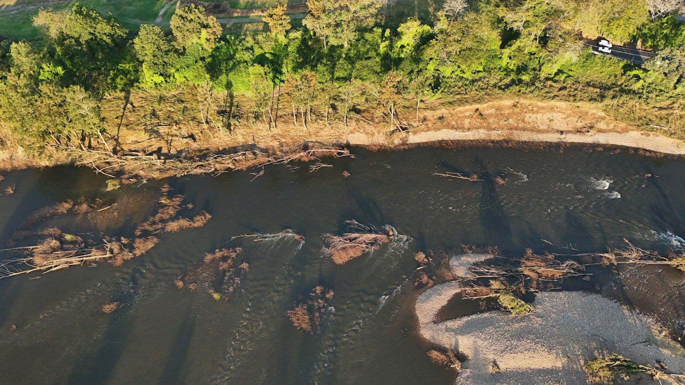
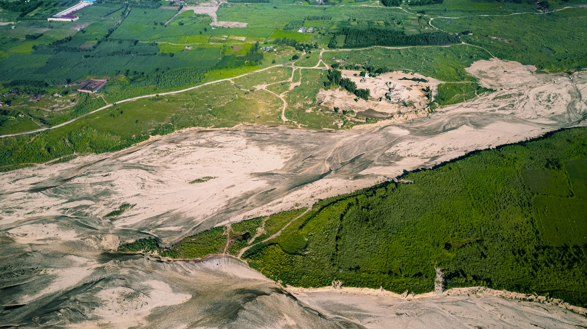
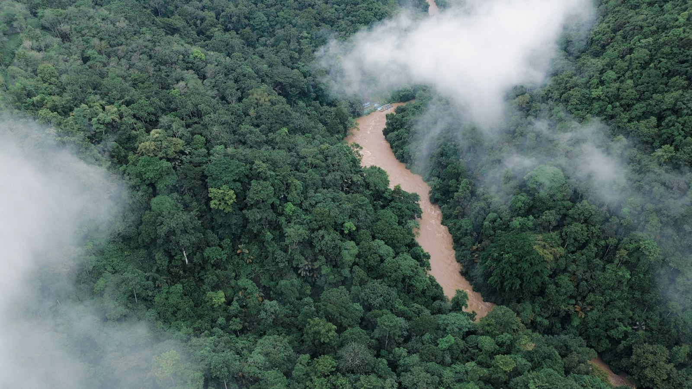
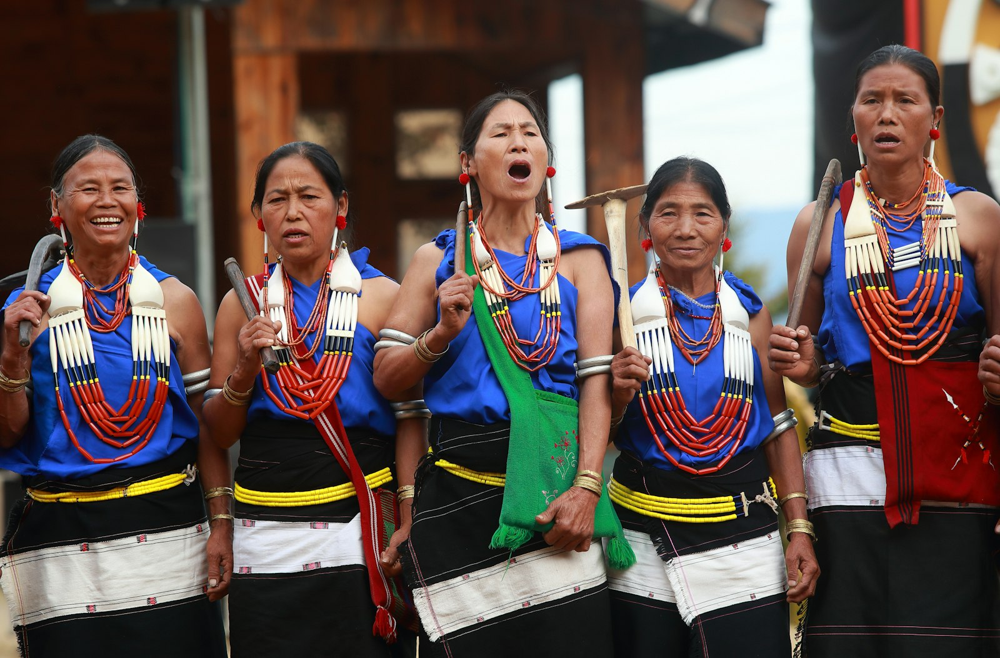

Amazon Field Guide · Threats No. 02
Gold Rush Peril: How Mining Threatens the Amazon
Hidden under the emerald canopy sits a metal that sparks one of the rainforest’s gravest threats—gold mining that scars rivers, poisons food webs, and invades protected lands.

As gold prices climb, miners churn riverbanks and forests across all nine Amazonian nations. Over the last six years, more than 2 million hectares of rainforest have been destroyed by mining—over half of that loss in Brazil. Hotspots include southern Peru and the Guyana Shield, with new frontiers opening in Ecuador. In 2024 alone, more than 111,000 hectares vanished to gold forays. More than a third of that damage lands inside protected areas and Indigenous territories.
The rush is fuelled by skyrocketing gold prices, weak enforcement, and poverty that leaves few safer jobs nearby. Legal mines exist, but illegal operations—often linked to smuggled mercury and laundered gold—do outsized harm. Gold exported to places such as Switzerland, Canada, and the UK sometimes exceeds what countries report producing, a clue that illegal trade is huge.
More than missing trees
Mining clears forest, builds rough roads, and dumps sediment into rivers. Spawning grounds for fish get smothered. River dolphins face murkier, more hazardous channels. Camps also raise hunting pressure on monkeys, tapirs, and other wildlife. The most stubborn danger, though, is invisible: mercury, a metal used to pull flecks of gold out of muddy slurry.
“Mercury can cycle through air, water, and soil for centuries—long after the dredges are gone.”
Poison in the food web
Small-scale miners mix mercury with crushed rock so gold sticks to it, then heat the mixture. Vapour rises into the air; leftover mercury washes into streams. Fish often exceed World Health Organization mercury limits. Otters, river dolphins, birds, and mammals take the toxin up the chain. Studies in Madre de Dios found nearly all of hundreds of primate samples contaminated. For Indigenous communities who rely on river fish, mercury exposure can mean developmental problems and long-term illness—harm that stretches across generations.
How mercury travels from mine to people
- Mine. Workers mix liquid mercury with crushed sediment so gold particles stick to it, then burn the amalgam. Mercury vapour escapes; leftover metal washes into creeks.
- River. Mercury settles in mud and water. Microbes can turn it into a form that living things absorb more easily.
- Fish. Small fish pick up mercury; bigger fish eat them. Levels climb with each step—a process called bioaccumulation.
- People & wildlife. Families who eat river fish, plus otters, dolphins, birds, and monkeys, receive the concentrated dose. The toxin can stay in ecosystems for centuries.
Five warning signs of the mining crisis
- Muddy dredge scars along rivers that once ran clear under continuous canopy.
- Mercury vapour and runoff that outlast any single mining camp.
- Staple fish exceeding safe mercury limits for human meals.
- Invasions of Indigenous territories and protected reserves.
- Gold exports that do not match official production—a red flag for illegal trade.

Trouble ahead—and reasons to hope
Controlling mining is hard because money moves fast and rules move slowly. Transnational networks smuggle mercury—often reported from routes including Mexico—and launder gold through complex supply chains. Policy shifts that ease access to sensitive areas can reopen scars that communities fought to close. Without safer livelihoods, remote towns stay pulled toward the next gold boom.
People are fighting back. Governments have intensified crackdowns, destroying illegal dredges and equipment. Amazon Mining Watch and related MAAP projects use AI and satellites for near real-time detection of new clearings. UNODC’s AURUM program and World Bank partnerships strengthen governance and aim to curb illegal trade. Community patrols expand eyes on the ground; rewilding and alternative jobs reduce the need to dig.
Students can help by learning where gold comes from, supporting groups that defend Indigenous land rights, and sharing accurate information—not scare stories. Stopping this gold rush takes global vigilance, real enforcement, and courage to protect one of Earth’s greatest biodiversity strongholds.


Odd facts
Word bank
- Amalgam
- — a mix of mercury and gold that miners heat to separate the metal.
- Bioaccumulation
- — toxins building up in animals as they eat contaminated food over time.
- Dredge
- — a machine or barge that scoops sediment from riverbeds in search of gold.
- Mercury
- — a toxic metal (symbol Hg) used in some small-scale gold mining.
- Laundering
- — hiding illegal gold by mixing it into legal supply chains.
- Protected area
- — land set aside by law to conserve nature—still sometimes invaded by illegal mines.